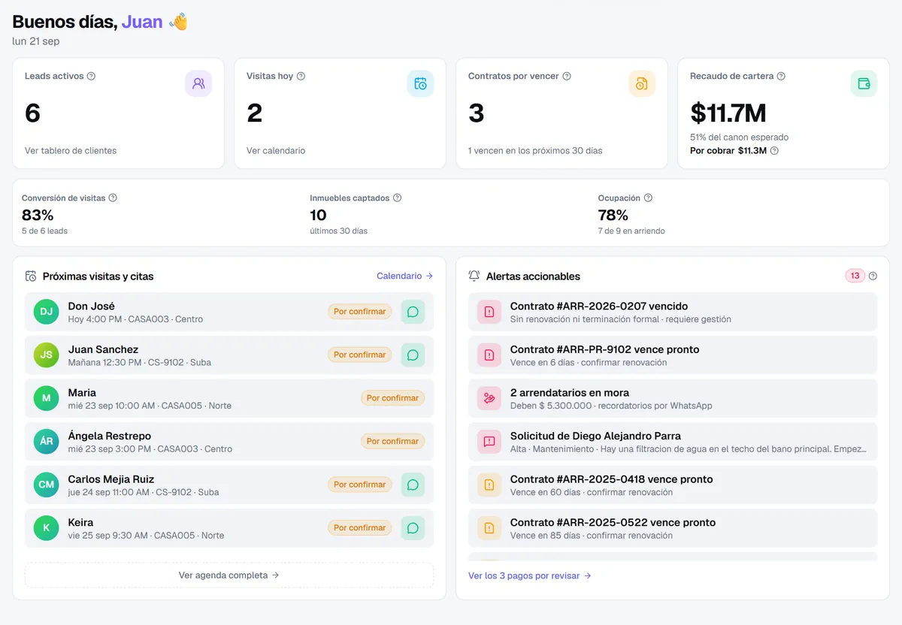

Convertimos ideas en software que impulsa
Somos un Hub de Ingeniería y Soluciones Tecnológicas que une desarrollo, IA, automatización y calidad para convertir tus ideas en productos digitales robustos, ágiles e impecables.
Su inmobiliaria atiende, agenda y cobra, incluso un domingo a las 8 p. m.
- Un asistente de IA que responde en su WhatsApp las 24 horas.
- Un CRM con pagos, contratos y cobranza en un solo lugar.
- Su equipo siempre tiene el control de cada conversación.

Un nombre con raíces y visión
Tres raíces, una sola identidad tecnológica
QUIAD nace de tres ideas que definen quiénes somos: QU de Quibdó, las raíces que nos dan origen y orgullo de territorio; IA de Inteligencia Artificial, el motor que integramos en cada solución para automatizar y potenciar procesos; y D de Desarrollo, la ingeniería de software a medida con la que convertimos ideas en productos reales.
Somos talento que nace en el Pacífico colombiano y construye tecnología para el mundo. Cada letra de QUIAD es una promesa: innovación con propósito, calidad de ingeniería y cercanía humana.
Una disciplina detrás de cada frente
Tres frentes técnicos que trabajan como uno solo para que tu producto piense, fluya y no falle
La interfaz
La interfaz que ve el usuario: experiencias web y móviles limpias, rápidas y coherentes en todo dispositivo.
La lógica
La lógica que procesa los datos: arquitecturas escalables, APIs sólidas y bases de datos bien pensadas.
QA & Pruebas Funcionales con IA
Automatización de flujos con n8n e IA, junto con validaciones funcionales que aseguran cada release. La garantía de que nada se rompe.
Misión y Visión
Misión
Transformar ideas en productos que funcionan
Potenciar el crecimiento de las empresas con soluciones de software a medida, automatización inteligente y aseguramiento de calidad. Trabajamos junto a nuestros clientes para entregar productos robustos, ágiles e impecables que generen un impacto real y duradero.
Visión
Ser el socio técnico de referencia
Queremos ser reconocidos como el Hub de Ingeniería que compite globalmente: referentes en integrar Inteligencia Artificial y automatización con ingeniería de calidad, y el aliado preferido de quienes buscan destacarse en un mundo digital en constante evolución.
Cómo trabajamos
Innovación con propósito
Adoptamos IA y automatización no por moda, sino para resolver problemas reales y darte resultados que se notan en el día a día de tu negocio.
Calidad que se comprueba
No entregamos software solo terminado: lo entregamos verificado. Cada solución pasa por QA porque tu tranquilidad depende de que todo funcione bien, siempre.
Aprendizaje constante
Aprendemos más para resolver mejor. Nos mantenemos al día en tecnología para ofrecerte siempre la solución más eficiente y actual.
Cercanía y transparencia
Hablamos claro y sin tecnicismos innecesarios. Te acompañamos en cada etapa y te contamos qué hacemos y por qué, para que siempre sepas en qué va tu proyecto.
Compromiso que responde
Ponemos el nombre de QUIAD en cada proyecto. Cumplimos lo que prometemos y respondemos por nuestro trabajo de principio a fin.
Orgullo y talento local
Nacimos en el Pacífico colombiano y creamos tecnología de nivel para el mundo. Creemos en el talento de nuestra región y lo demostramos con excelencia.
Objetivos
Consolidar una reputación sólida en desarrollo de software, IA, automatización y calidad.
Superar las expectativas de cada cliente con soluciones innovadoras, seguras y verificadas.
Ampliar el portafolio hacia las últimas tecnologías y necesidades del mercado.
Forjar alianzas estratégicas y expandir nuestra presencia a mercados internacionales, apalancados en un talento de alto nivel y la excelencia técnica que nos caracteriza.
Servicios
Cubrimos el ciclo de vida completo del software: desde el levantamiento de información o la idea y la arquitectura, el desarrollo, las pruebas y el soporte
Automatización inteligente & IA
n8n · Inteligencia Artificial aplicadaConectamos tus herramientas y eliminamos el trabajo manual repetitivo con flujos automatizados en n8n potenciados por IA. Menos errores humanos, más eficiencia y decisiones basadas en datos.
- Orquestación de datos y agentes de IA entre múltiples plataformas.
- Automatización de flujos de trabajo e integración de ecosistemas digitales.
- Agentes y asistentes con IA aplicada a procesos del negocio.
Llevemos tu idea al siguiente nivel
Cuéntanos qué necesitas y nuestro equipo te responde con una propuesta a la medida
Conectamos tus proyectos con el mundo
Integramos plataformas, datos y equipos sin fronteras. Trabajamos en remoto con clientes de cualquier país y respondemos rápido.
Resolvemos tus dudas
Lo que las empresas nos preguntan antes de empezar, respondido sin rodeos